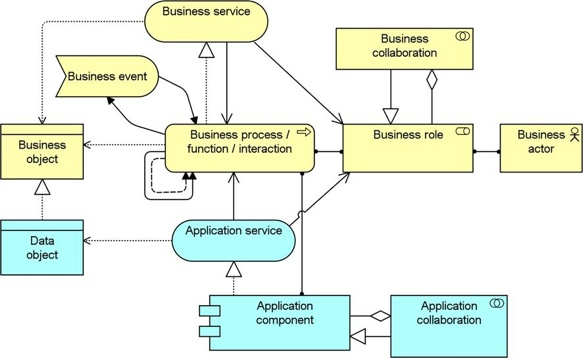

The Service Realisation viewpoint is used to show how one or more business services are realized by the underlying processes (and sometimes by application components). Thus, it forms the bridge between the business products viewpoint and the business process view. It provides a “view from the outside” on one or more business processes.
| Stakeholders | Process and domain architects, product and operational managers |
| Concerns | Added-value of business processes, consistency and completeness, responsibilities |
| Purpose | Designing, deciding |
| Abstraction Level | Coherence |
| Layer | Business layer (Application layer) |
| Aspects | Behaviour, Active Structure, Passive Structure |
Concepts and Relations
